Intermediate Shaft Reassembly
Intermediate Shaft ReassemblyIntermediate Shaft 5-speed M/T model (except Si):
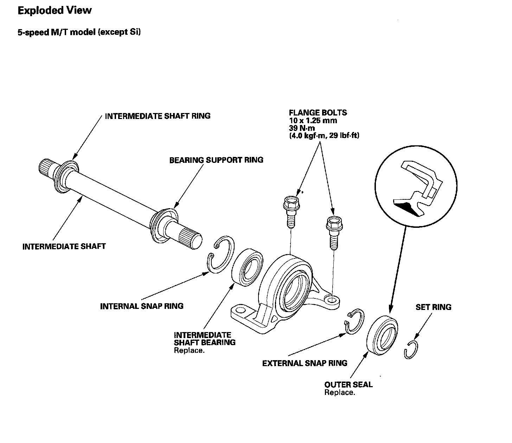
Intermediate Shaft 5-speed M/T model (Si):
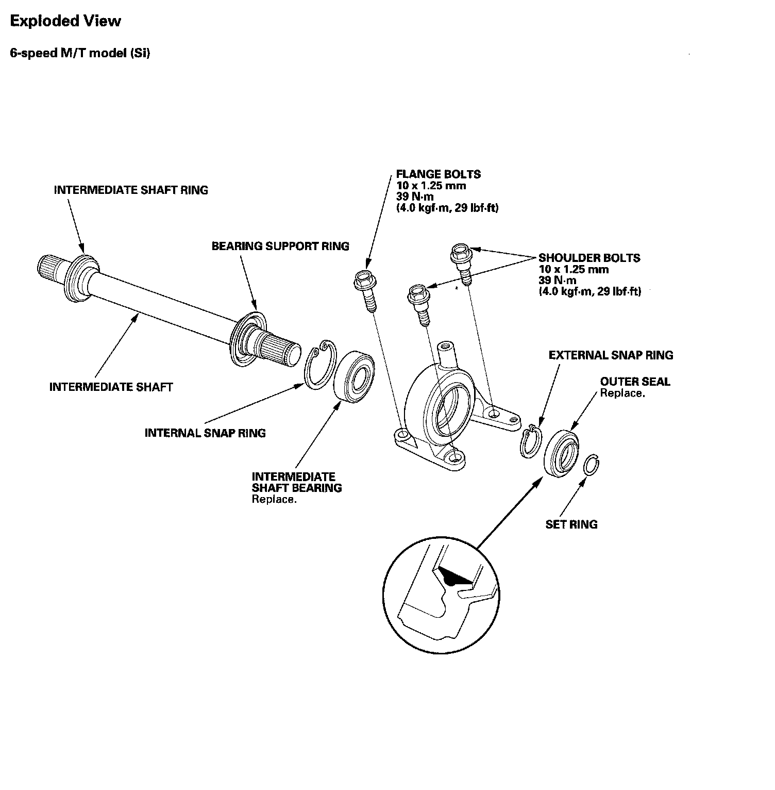
Special Tools Required
^ Oil seal driver 07GAD-PH70201
^ Attachment, 52 x 55 mm 07746-0010400
^ Attachment, 35 mm I.D. 07746-0030400
^ Driver 07749-0010000
NOTE: Refer to the Exploded View, as needed, during this procedure.
5-speed M/T model (except Si)
1. Clean the disassembled parts with solvent, and dry them with compressed air.
NOTE: Do not wash the rubber parts with solvent.
2. Press the intermediate shaft bearing (A) into the bearing support (B) using the 52 x 55 mm attachment (C), driver (D), and a press.
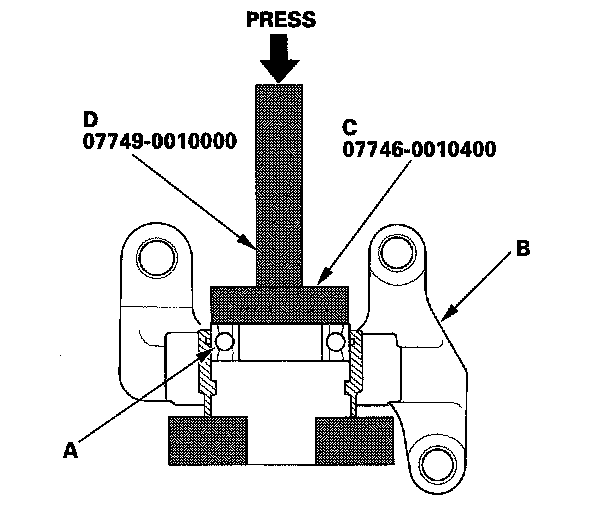
3. Seat the internal snap ring into the groove of the bearing support.
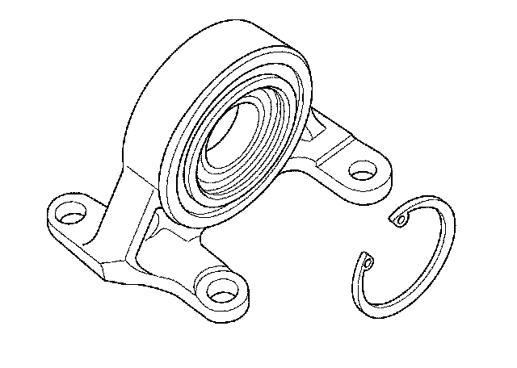
4. Press the intermediate shaft (A) into the new shaft bearing (B) using the 35 mm I.D. attachment (C) and a press.
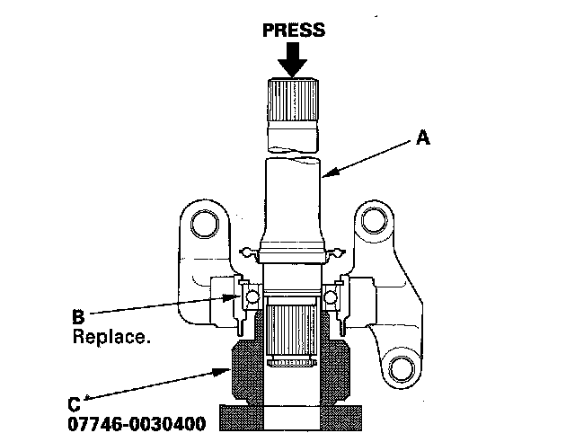
5. Seat the external snap ring (A) into the groove of the intermediate shaft (B).
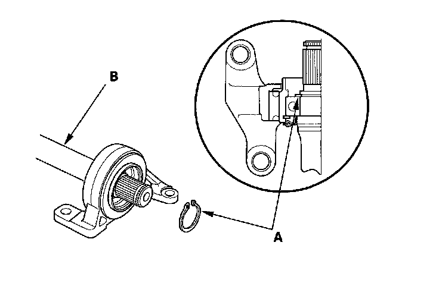
6. Install the new outer seal (A) into the bearing support (B) using the oil seal driver (C) and a press.
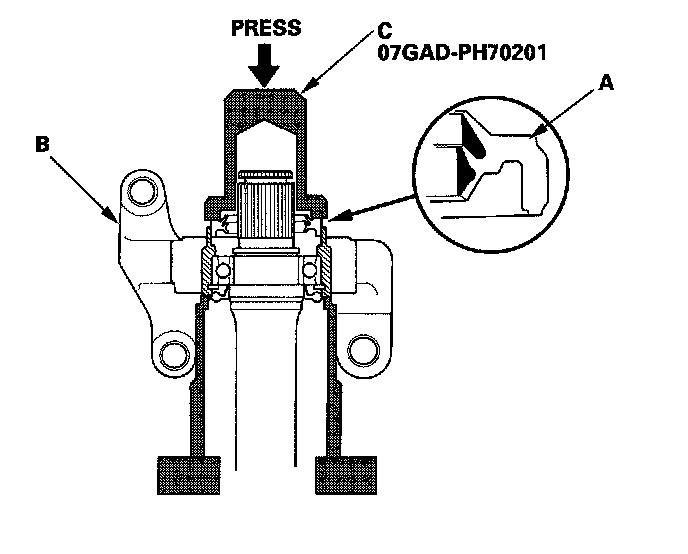
6-speed M/T model (Si)
1. Clean the disassembled parts with solvent, and dry them with compressed air.
NOTE: Do not wash the rubber parts with solvent.
2. Press the intermediate shaft bearing (A) into the bearing support (B) using the 52 x 55 mm attachment (C), driver (D), and a press.
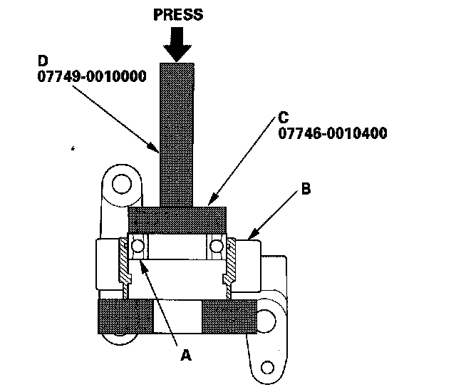
3. Seat the internal snap ring into the groove of the bearing support.
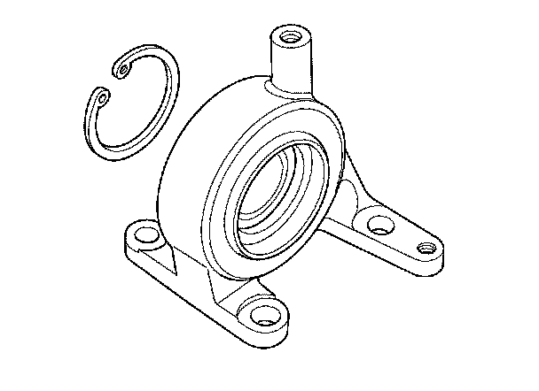
4. Press the intermediate shaft (A) into the new shaft bearing (B) using the 35 mm I.D. attachment (C) and a press.
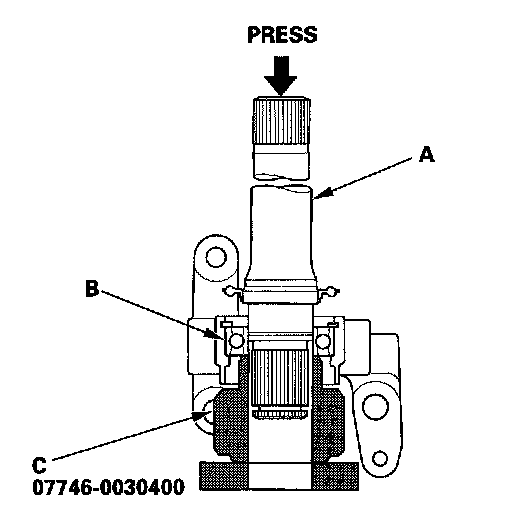
5. Seat the external snap ring (A) into the groove of the intermediate shaft (B).
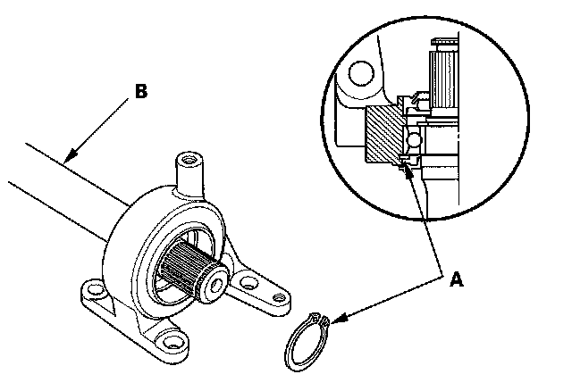
6. Install the new outer seal (A) into the bearing support (B) using the oil seal driver (C) and a press.
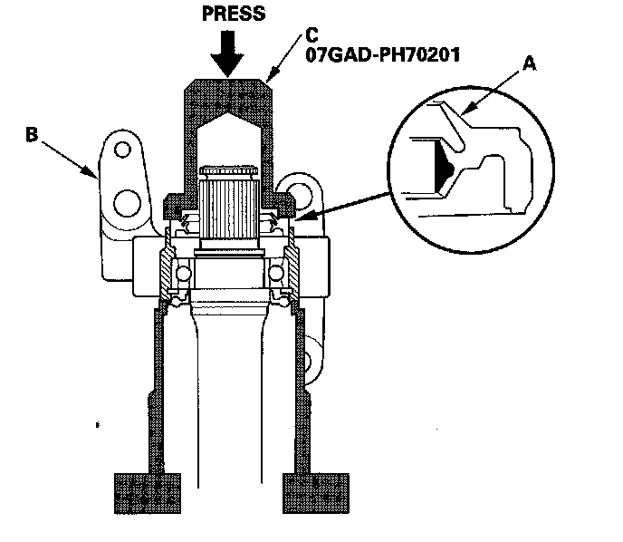